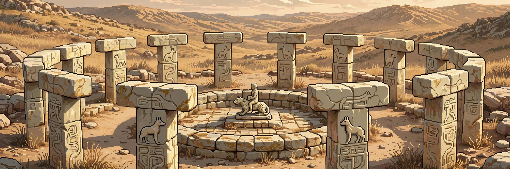

WEEK 03 · OCTOBER 5, 2026
The rider, uncaptioned

FIG. 1 · THE FIND, RECONSTRUCTED · KARAHAN TEPE, SOUTHEASTERN TURKEY
This summer, at Karahan Tepe in southeastern Turkey, excavators cleared a small circular room of flat-laid stone and found a figure still standing where it was left: a human being, seated upright on the back of a leopard. The carving is about 70 centimetres tall. It is roughly 11,000 years old, which puts the making of it before farming had settled in at the site, and long before anyone there could write a word down.12
The room matters. The figure was not tossed in a midden or buried with a chief. It stood on a platform running along the wall, indoors, at eye level, in a structure about three metres across. Whoever kept that room walked past the rider. Probably daily. Probably without thinking about it, which is what happens to every image that stays up long enough.
Five years earlier the same hillside gave up the mirror image: a man carrying a leopard on his back, the animal draped over him like a debt.1 That one reads easily. Burden, trophy, a hard carry home. The new one refuses. Now the cat is underneath and the human is on top, and nobody left a key.
- Mastery. Leopards were the dangerous neighbours: strong, quick, fond of the dark, and hard to kill. To sit on one, even in stone, is to announce the argument is settled. Archaeologist Jens Notroff, asked about the find, reached for the same word: power.1
- Story. A hero, a god, a shape out of a tale told at fires we will never hear. Cultures do not carve the same animal twice by accident. The leopard kept showing up at Karahan Tepe. It meant something in the sentence.
- Mark. An emblem for a house or a clan, readable at a glance by everyone in the valley and by no one since. Most images are this, in the end. A flag is only cloth to the people it was not raised for.
Necmi Karul, who runs the dig, has watched the cast change across the site. The older stones are crowded with animals. Then, as people settle, the human figure walks in and takes the centre of the frame.1 The rider may be the hinge. The animal becomes the chair. The person becomes the point.
A veteran of Göbekli Tepe, the older and more famous site nearby, warned years ago that reading symbols out of prehistoric stone is close to futile.1 He is right. It changes nothing. A picture that outlives its meaning invites meaning the way an empty seat invites sitting.
The stone kept the composition and lost the caption. That is the trade every image makes, given enough centuries (ours are making it faster). Eleven thousand years on, the rider is still upright, still patient, still unread. The leopard has not moved. Neither, so far, have we.
SOURCES
- Smithsonian Magazine, on the find, the room, and the 2021 pair.
- IFLScience, on the ministry announcement and the height.
- ZME Science, on the stone and the setting.
- The Art Newspaper, on why no one has seen a rider like it.